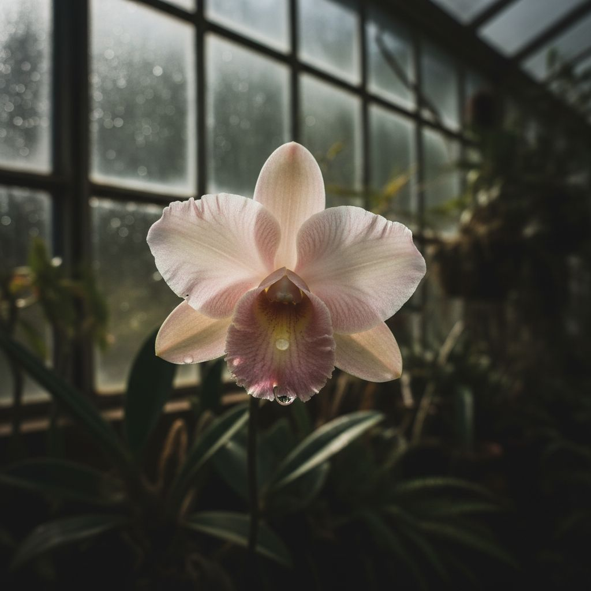

six thousand plants under one roof
The living collection
Four wings, four climates, one continuous garden. Walk it in an hour, or in the order the light does.
six thousand plants under one roof
Four wings, four climates, one continuous garden. Walk it in an hour, or in the order the light does.
The heart of the house. The vault reaches nineteen metres, and the Jubaea palm in the centre bed was planted the year the glass went in, which makes it older than the park wall around us. On bright afternoons the light through the roof lands in moving bars on the path.

The quiet wing. Its tree ferns came off a single ship from New Zealand and have been shedding fronds onto the same gravel path for over a century. Sit on the stone bench at the far end and the only sound is the misting system deciding things.

A long gallery of fogged glass where the collection rotates so that something is always flowering. The growers keep a chalkboard by the door with the week's three best smells, and they are honest about it when the answer is the compost.

The Amazonian lilies are grown from seed every spring and by August their pads carry rims six inches high. A single flower opens white on the first evening and pink by the second, and the pool is drained just once a year, in February, to sweep it.